품질경영기사 (2022-04-24 기출문제)
1과목: 실험계획법
1. 다음은 A, B, C의 요인으로 각 2수준계 8조의 23 형 요인실험을 랜덤으로 행한 데이터이다. 이 때 SA의 값은?
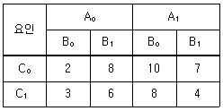
- 1.12
- 1.87
- 12.5
- 18.7
(정답률: 64%)
2. 23형의 교락법에서 인수분해식을 이용하여 단독교락을 실시하려 할 때의 설명 중 틀린 것은?
- 블록이 2개로 나누어지는 교락을 의미한다.
- (1)을 포함하지 않는 블록을 주블록이라고 한다.
- 주효과 A를 블록과 교락시키면, 블록 1은 (1), b, c, bc이고, 블록 2는 a, ab, ac, abc 가 된다.
- 블록과 교락시키기 원하는 효과에 –1을 붙여, 인수분해를 풀어 +군과 –군으로 나누어 블록을 배치한다.
(정답률: 70%)

3. A요인의 수준수가 3인 실험을 5회 반복하여 ST = 668, SA = 190을 얻었다. 오차항의 분산
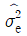
를 추정하면 약 얼마인가?- 15.3
- 39.8
- 83.1
- 95.0
(정답률: 72%)
4. 원래 농사시험에서 고안된 실험법으로 큰 실험구를 주구로 분할한 후 주구내 실험단위를 세구로 등분하여 실험하는 실험방법은?
- 분할법
- 직교배열법
- 교락법
- Kn형 요인실험
(정답률: 67%)
5. L16(215) 직교배열표를 이용한 실험계획에서 2 수준요인 효과를 최대로 몇 개까지 배치할 수 있는가?
- 7
- 8
- 15
- 16
(정답률: 63%)
6. 난괴법 실험에서 분산분석결과 A(모수요인)이 유의한 경우, 요인 A의 각 수준에서 모평균 μ(Ai)의 신뢰구간 추정식은? (단, ν*는 Satterthwaite 자유도이다.)
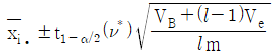
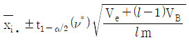
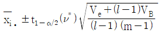
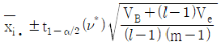
(정답률: 40%)
7. 제품에 영향을 미치고 있다고 생각되는 요인 A와 요인 B를 랜덤하게 반복 없는 2요인 실험을 실시하여 다음과 같은 자료를 얻었다. 이 때의 수정항(CT)과 총제곱합(ST)은 각각 얼마인가?
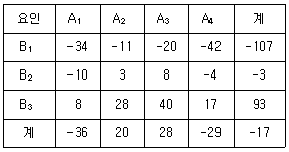
- 수정항 : 12.04, 총제곱합 : 317146
- 수정항 : 16.71, 총제곱합 : 506.50
- 수정항 : 18.57, 총제곱합 : 553.04
- 수정항 : 24.08, 총제곱합 : 6342.92
(정답률: 63%)
8. 계량 및 계수치 요인에 대한 설명으로 틀린 것은?
- 원료의 종류는 계수요인이다.
- 계량요인은 온도, 압력 등과 같이 계량치로 측정되는 요인이다.
- 요인이 계수치인 경우에는 요인이 갖는 종류의 2배수만큼 수준수로 취해주는 것이 바람직하다.
- 요인이 계량치인 경우에는 수준의 최대치와 최소치를 흥미영역의 최대치와 최소치로 취해주는 것이 좋다.
(정답률: 56%)
9. 선형식(L)이 다음과 같을 때, 이 선형식의 단위수는?
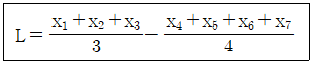
- 7/12
- 5/12
- 3/4
- 1/4
(정답률: 62%)
10. 4대의 기계(A)와 이들 기계에 의한 제조공정시 열처리 온도(B:2수준)의 조합 AiBj에서 각각 n개씩의 제품을 만들어 검사할 때 적합품이면 0, 부적합품이면 1의 값을 주기로 한다. 이 때 데이터의 구조는?
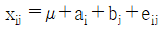
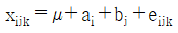
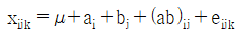
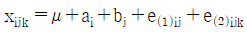
(정답률: 33%)
11. 다구찌는 사회지향적인 관점에서 품질의 생산성을 높이기 위하여 다음과 같이 정의하였다. 품질항목에 속하지 않는 것은?
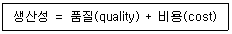
- 사용비용
- 공해환경에 의한 손실
- 기능산포에 의한 손실
- 폐해항목에 의한 손실
(정답률: 54%)
12. 반복이 있는 2요인 실험 혼합모형에서 다음과 같은 분산분석표를 구했다. ( ㉠ )에 들어갈 값은 얼마인가? (단, A는 모수요인, B는 변량요인이다.)
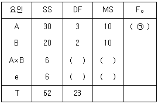
- 10
- 15.4
- 20
- 30
(정답률: 52%)
13. 다음은 변량요인 A와 B로 이루어진 지분실험법의 분산분석표이다. E(VA)를 나타낸 식으로 맞는 것은?
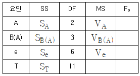
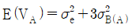
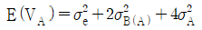
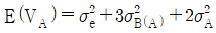
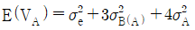
(정답률: 43%)
14. 직물 가공 공정에서 처리액의 농도(A) 5수준에서 4회씩 반복 실험하여 직물의 강도를 측정하였다. 농도와 강도의 관련성을 회귀식을 이용하여 규명하고자 다음과 같은 분산분석표를 얻었다. 이와 관련된 설명으로 틀린 것은?
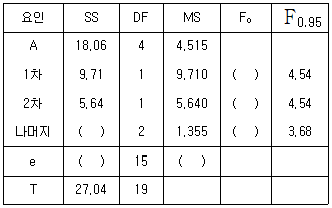
- 1차와 2차 회귀는 유의수준 0.⑤에서 모두 유의하다.
- 3차 이상의 고차 회귀 제곱합은 2.71 이다.
- 2차 곡선 회귀로써 농도와 강도간의 관계를 설명할 수 있다.
- 두 변수간의 관련 관계를 설명하는데 3차 이상의 고차 회귀가 필요하다.
(정답률: 51%)
15. 7개의 3수준 요인들의 주효과에만 관심이 있다. 어느 직교배열표를 사용하는 것이 가장 경제적인가?
- L8(27)
- L9(34)
- L18(21×37)
- L27(313)
(정답률: 39%)
16. 라틴방격법에서 요인 A, B, C가 있다. 수준수는 각각 4이고, 반복 2회의 실험을 하였을 때, 오차항의 자유도는 얼마인가?
- 6
- 12
- 15
- 21
(정답률: 26%)
17. 25형의 1/4 실시 실험에서 이중교락을 시켜 블록과 ABCDE, ABC, DE를 교락시켰다. AD와 별명관계가 아닌 것은?
- AB
- AE
- BCE
- BCD
(정답률: 62%)
18. 공장 내의 여러 분석자 중에서 랜덤하게 5명의 분석자를 선택하여 그들의 분석결과로서 공장 내 분석자의 측정산포를 고려하였다면, 이 모형은?
- 모수모형
- 변량모형
- 혼합모형
- 구조모형
(정답률: 63%)
19. 3요인 A, B, C 모수모형의 반복이 없는 3요인 실험에서 각 제곱합을 구하는 관계식으로 맞는 것은?
- SAB = SA + SB
- SAB = ST- SA-SB
- SAB = SA×B+SA+SB
- SAB = SA×B-SA-SB
(정답률: 49%)
20. 1요인 실험에서 아래의 데이터를 얻었다. SA의 값은?
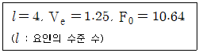
- 17.80
- 25.54
- 23.25
- 39.90
(정답률: 57%)
2과목: 통계적품질관리
21. A회사와 B회사의 제품에서 각각 150개, 200개를 추출하여 부적합품수를 찾아보니 각각 30개, 25개이었다. 두 회사 제품의 부적합품률의 차를 검정하기 위한 검정통계량은 약 얼마인가?
- 1.09
- 1.63
- 1.91
- 2.10
(정답률: 32%)
22. 계수형 축차 샘플링 검사방식(KS Q ISO 28591)에서 hA = 1.445, hR= 1.885, g = 0.110 일 때, n＜nt 조건에서의 합격판정치(A)는?
- A = 0.110 ncum + 1.445
- A = 0.110 ncum + 1.885
- A = 0.110 ncum - 1.445
- A = 0.110 ncum - 1.885
(정답률: 45%)
23. n = 5인 고-저(H-L) 관리도에서
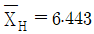
,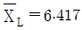
일 때, UCL과 LCL을 구하면 약 얼마인가? (단, n = 5 일 때 H2 = 1.363 이다.)- UCL = 6.293, LCL = 6.107
- UCL = 6.460, LCL = 6.193
- UCL = 6.465, LCL = 6.394
- UCL = 6.867, LCL = 6.293
(정답률: 40%)
24. 어떤 제품의 품질 특성치는 평균 μ, 분산 σ2인 정규분포를 따른다. 20개의 제품을 표본으로 취하여 품질 특성치를 측정한 결과 평균 10, 표준편차 3을 얻었다. 분산 σ2에 대한 95% 신뢰구간은 약 얼마인가? (단, χ20.975(19) = 32.852, χ20.025 = 8.907 이다.)
- 5.21 ~ 19.20
- 5.21 ~ 20.21
- 5.48 ~ 19.20
- 5.48 ~ 20.21
(정답률: 46%)
25. 철강재의 인장강도는 클수록 좋다. 평균치가 46kg/mm2 이상인 로트는 합격시키고, 43kg/mm2 이하인 로트는 불합격시키는 경우의 합격 판정치는? (단, σ = 4kg/mm2, α = 0.⑤, β = 0.10,
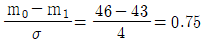
인 경우, n = 15, G0 = 0.4111 이다.)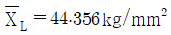
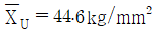
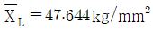
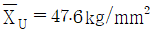
(정답률: 34%)
26. 전수검사가 불가능하여 반드시 샘플링검사를 하여야 하는 경우는?
- 전기제품의 출력전압의 측정
- 주물제품의 내경가공에서 내경의 측정
- 전구의 수입검사에서 전구의 점등시험
- 진공관의 수입검사에서 진공관의 평균수명 추정
(정답률: 62%)
27. OC 곡선에서 소비자 위험을 가능한 작게 하는 샘플링 방식은?
- 샘플의 크기를 크게 하고, 합격판정개수를 크게 한다.
- 샘플의 크기를 크게 하고, 합격판정개수를 작게 한다.
- 샘플의 크기를 작게 하고, 합격판정개수를 크게 한다.
- 샘플의 크기를 작게 하고, 합격판정개수를 작게 한다.
(정답률: 58%)
28. A 자동차 회사의 신차종 K 자동차는 신차 판매 후 30일 이내에 보증수리를 받을 확률이 5%로 알려져 있다. 신규 판매한 자동차 5대를 추출하여 30일 이내에 보증수리를 받는 차량 수의 확률에 관한 내용으로 틀린 것은?
- 보증수리를 1대도 받지 않을 확률은 약 0.774 이다.
- 적어도 1대가 보증수리를 필요로 할 확률은 약 0.226 이다.
- X를 보증수리를 받는 차량수라 할 때, X의 기댓값은 0.25 이다.
- X를 보증수리를 받는 차량수라 할 때, X의 분산은 약 0.27 이다.
(정답률: 53%)
29.
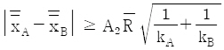
는 2개의 층 A, B간 평균치의 차를 검정할 때 사용한다. 이 식의 전제조건으로 틀린 것은? (단, k는 시료군의 수, n은 시료군의 크기이다.)- kA = kB 일 것
- nA = nB 일 것
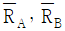
는 유의 차이가 없을 것- 두 개의 관리도는 관리상태에 있을 것
(정답률: 62%)
30. 어떤 공장에서 A, B, C 기계의 고장횟수는 아래 표와 같다. 기계에 따라 고장횟수가 차이가 있는지 검정하고자 할 때의 설명으로 틀린 것은?
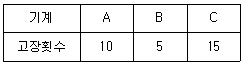
- 자유도는 2 이다.
- 기대도수는 각 기계별로 10개씩이다.
- 귀무가설(H0) : 각 기계별 고장횟수는 같다.
대립가설(H1) : 각 기계별 고장횟수는 다르다. - 검정통계량(χ02)은
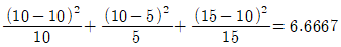
이다.
(정답률: 60%)
31. 다음의 데이터로서 유의수준 5%로 평균치의 신뢰구간을 구하면 약 얼마인가? (단, t0.975(9) = 2.262, t0.975(10) = 2.228 이다.)
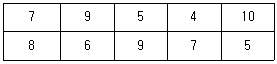
- 7.0 ± 1.43
- 7.0 ± 0.41
- 7.6 ± 1.43
- 7.6 ± 0.41
(정답률: 58%)
32. 관리도에 관한 설명으로 거리가 가장 먼 것은?
- 관리도는 제조공정이 잘 관리된 상태에 있는가를 조사하기 위해서 사용된다.
- 관리도는 일반적으로 꺾은선그래프에 1개의 중심선과 2개의 관리한계를 추가한 것이다.
- 우연원인에 의한 공정의 변동이 있으면 일반적으로 관리한계 밖으로 특성치가 나타난다.
- 관리도의 사용 목적에 따라 기준값이 주어지지 않는 관리도와 기준값이 주어지는 관리도로 구분된다.
(정답률: 57%)
33. 부적합수와 관련하여 표본의 면적이나 길이 등이 일정하지 않은 경우에 사용하는 관리도는?
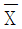
관리도- u 관리도
- X 관리도
- c 관리도
(정답률: 52%)
34. 다음의 두 상관도에서 (a), (b)에서 x, y 사이의 표본상관계수에 대한 크기를 비교한 것으로 맞는 것은?
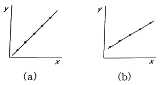
- (a) = (b)
- (a) ＞ (b)
- (a) ＜ (b)
- 비교할 수 없다.
(정답률: 43%)
35. 모표준편차를 모르는 경우 H0 : μ ≥ μ0, H1 : μ ＜ μ0 의 검정에 있어서 귀무가설이 기각되는 경우 모평균의 신뢰한계를 추정하는 식은?
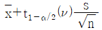
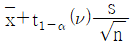
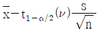
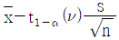
(정답률: 38%)
36. 계수형 샘플링 검사 절차 – 제1부 : 로트별 합격품질한계(AQL) 지표형 샘플링검사방식(KS Q ISO 2859-1)에서 검사수준에 관한 설명 중 틀린 것은?
- 검사수준은 소관권한자가 결정한다.
- 상대적인 검사량을 결정하는 것이다.
- 통상적으로 검사수준은 Ⅱ를 사용한다.
- 수준 Ⅰ는 큰 판별력이 필요한 경우에 사용한다.
(정답률: 52%)
37. 샘플링 오차에 대한 검토 시 측정치의 분포에 주목하여 통계적인 방법으로 어떠한 조치를 취하여야 되겠는가를 모색해야 한다. 이 때 오차의 검토순서로 가장 타당한 것은?
- 정밀성(precision) → 정확성(accuracy) → 신뢰성(reliability)
- 신뢰성(reliability) → 정밀성(precision) → 정확성(accuracy)
- 정확성(accuracy) → 신뢰성(reliability) → 정밀성(precision)
- 정확성(accuracy) → 정밀성(precision) → 신뢰성(reliability)
(정답률: 45%)
38. 어떤 기체로 만들어지는 샤프트의 직경은 평균치 3.000cm, 표준편차 0.010cm의 정규분포를 한다. 이 직경의 규격을 3.0±0.01cm 로 하면, 부적합품률은?
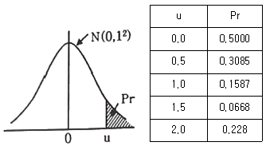
- 0.1587%
- 0.3174%
- 15.87%
- 31.74%
(정답률: 40%)
39. 추정에 관한 설명으로 틀린 것은?
- 통계량
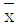
의 기대치는 모평균 μ와 일치하는 것으로서 를 모평균의 불편 추정량이라 한다.
를 모평균의 불편 추정량이라 한다. - 모평균을 구간 추정하였을 경우 모평균의 참값이 그 구간 내에 존재하게 되는 확률을 위험률이라 한다.
- 유한 모집단으로부터 샘플 평균
 의 표준편차는 무한 모집단인 경우의
의 표준편차는 무한 모집단인 경우의 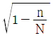
배가 된다. - 통계량은 불편성(unbiasedness), 유효성(efficiency), 일치성(consistency)을 갖추고 있어야 한다.
(정답률: 53%)
40.
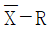
관리도에서 관리계수(Cf)가 1.33 이라면 해당 공정에 대한 판단은?- 군내변동이 작다.
- 군내변동이 크다.
- 군간변동이 크다.
- 대체로 관리상태이다.
(정답률: 45%)
3과목: 생산시스템
41. PERT에서 어떤 활동의 3점 시간견적결과 (4, 9, 10)을 얻었다. 이 활동시간의 기대치와 분산은 각각 얼마인가?
- 23/3, 1
- 23/3, 5/3
- 25/3, 1
- 25/3, 5/3
(정답률: 35%)
42. 다음의 MRP(Material Requirements Planning) 특징으로 맞는 것을 모두 선택한 것은?
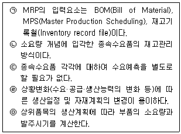
- ㉡, ㉢, ㉣, ㉤
- ㉠, ㉡, ㉢, ㉤
- ㉠, ㉡, ㉢, ㉣, ㉤
- ㉠, ㉡, ㉣, ㉤
(정답률: 55%)
43. JIT시스템에서 소로트화의 특징이 아닌 것은?
- 검사비용을 줄일 수 있다.
- 시장수요의 적절한 대응이 어렵다.
- 소로트화는 생산리드타임을 감소시킨다.
- 소로트화는 공장의 작업부하를 균일하게 한다.
(정답률: 60%)
44. 고객의 요구를 효율적으로 충족시키기 위해 공급자, 생산자, 유통업자 등 관련된 모든 단계의 정보와 자재의 흐름을 계획, 설계 및 통제하는 관리기법은?
- SCM
- ERP
- MES
- CRM
(정답률: 62%)
45. 목표생산주기시간(사이클 타임)을 구하는 공식으로 맞는 것은? (단, ∑ti 는 총 작업 소요시간, Q는 목표생산량, a는 부적합품률, y는 라인의 여유율이다.)
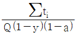
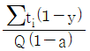
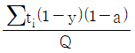
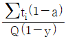
(정답률: 49%)
46. 소모품과 같이 종류가 많고 비교적 중요하지 않은 값싼 것에 대해서는 납품업자 1개사를 지정하여 그 업자에게 모든 것을 맡겨 전문적으로 납품시키는 구매계약 방법은?
- 위탁구매방식
- 수의계약
- 지명경쟁계약
- 연대구매방식
(정답률: 68%)
47. 설비배치의 형태에 영향을 주는 요인이 아닌 것은?
- 품목별 생산량
- 운반설비의 종류
- 생산품목의 종류
- 표준시간의 설정방법
(정답률: 56%)
48. A, B, C, D 4개의 작업은 모두 공정 1을 먼저 거친 다음에 공정 2를 거친다. 작업량이 적은 순으로 작업순위를 결정한다면 최종작업이 공정 2에서 완료되는 시간은?
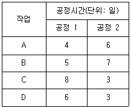
- 29일
- 30일
- 31일
- 32일
(정답률: 40%)
49. 가중이동평균법에서 최근 자료에 높은 가중치를 부여하는 가장 큰 이유는?
- 매개변수 파악을 위하여
- 시간적 간격을 좁히기 위하여
- 재고의 정확성을 높이기 위하여
- 수요변화에 신속 대응하기 위하여
(정답률: 68%)
50. 지수평활계수(α)에 대한 설명으로 맞는 것은?
- 초기에 설정한 α값은 변경할 수 없다.
- α값은 –1 이상, 1 이하인 실수 값으로 결정한다.
- 수요의 추세가 안정적인 경우에는 α값을 크게 한다.
- α가 큰 경우는 최근의 실제수요에 보다 큰 비중을 둔다.
(정답률: 51%)
51. 다음과 같은 제품을 생산하는데 적합한 배치방식은 무엇인가?
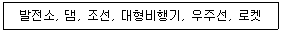
- 공정별 배치
- 제품별 배치
- 위치고정형 배치
- 혼합형 배치
(정답률: 68%)
52. 고정비(F), 변동비(V), 개당 판매가격(P), 생산량(Q)이 주어졌을 때 손익분기점을 산출하는 식은?
(정답률: 58%)
53. 단일설비 일정계획에서 작업시간이 가장 짧은 작업부터 우선적으로 처리하는 작업순위 규칙은?
- EDD(earliest due date)
- SPT(shortest processing time)
- FCFS(first come first serviced)
- PTS(predetermined time standard)
(정답률: 69%)
54. 어느 프레스공장에서 프레스 10대의 가동상태가 정지율 25%로 추정되고 있다. 이 때 워크샘플링법에 의해서 신뢰도 95%, 상대오차 ±10%로 조사하고자 할 때 샘플의 크기는 약 몇 회인가? (단, u0.025 = 1.96, u0.⑤ = 1.645 이다.)
- 72회
- 96회
- 1152회
- 1536회
(정답률: 35%)
55. 제품 생산 시 발생되는 데이터를 실시간으로 수집하고 조회하며, 이들 정보를 통하여 생산 통제를 하는 1차 기능과 분석 및 평가를 통한 생산성향상을 기할 수 있는 시스템은?
- POP(Point of Production)
- POQ(Period Prder Quantity)
- BPR(Business Process Reengineering)
- DRP(Distribution Requirements Planning)
(정답률: 57%)
56. 고정주문량 모형의 특징을 설명한 것으로 맞는 것은?
- 주문량은 물론 주문과 주문 사이의 주기도 일정하다.
- 최대재고수준은 조달기간 동안의 수요량의 변동 때문에 언제나 일정한 것은 아니다.
- 재고수준이 재주문점에 도달하면 주문하기 때문에 재고수준을 계속 실사할 필요는 없다.
- 하나의 공급자로부터 상이한 수많은 품목을 구입하는 경우에 수량할인을 받기 위해 적용하면 유리하다.
(정답률: 48%)
57. 다음은 자주보전 7가지 단계의 내용이다. 순서를 맞게 나열한 것은?
- ㉢→㉥→㉦→㉡→㉣→㉤→㉠
- ㉢→㉥→㉦→㉣→㉤→㉡→㉠
- ㉦→㉢→㉥→㉡→㉣→㉤→㉠
- ㉦→㉢→㉥→㉣→㉤→㉡→㉠
(정답률: 41%)
58. 동작경제의 원칙 중 “공구의 기능을 결함하여 사용하도록 한다.”는 원칙은?
- 신체의 사용에 관한 원칙
- 작업장의 배치에 관한 원칙
- 작업범위의 선정에 관한 원칙
- 공구 및 설비의 디자인에 관한 원칙
(정답률: 58%)
59. 설비보전에 관한 공식 중 틀린 것은?
- MTBF = 총가동시간/총고장건수
- 설비종합효율 = 시간가동률×속도가동률×적합품률
(정답률: 48%)
60. 인간이 행하는 손동작을 17가지 내지 18가지의 기본적인 동작으로 구분하고, 작업자의 수동작을 분석하여 작업자의 작업동작을 개선하기 위한 동작분석 방법은?
- 서블릭분석
- 공정분석
- 메모모션분석
- 작업분석
(정답률: 49%)
4과목: 신뢰성관리
61. 제품의 신뢰성은 고유 신뢰성과 사용 신뢰성으로 구분된다. 사용 신뢰성의 증대방법에 속하는 것은?
- 고(高) 신뢰도 부품을 사용한다.
- 기기나 시스템에 대한 사용자 매뉴얼을 작성 배포한다.
- 부품의 전기적, 기계적, 열적 및 기타 작동조건을 경감한다.
- 부품고장의 영향을 감소시키는 구조적 설계방안을 강구한다.
(정답률: 55%)
62. 수명분포가 지수분포를 따르는 경우에 관한 설명 중 틀린 것은?
- 단위시간당의 고장횟수는 이항분포를 따른다.
- 고장률은 평균수명에 대해 역의 관계가 성립한다.
- t시간을 사용한 뒤에도 작동되고 있다면 고장률은 처음과 같이 일정하다.
- 시스템의 사용시간이 경과한 뒤에도 측정하는 관심 모수의 값은 변하지 않는다.
(정답률: 39%)
63. 동일한 부품 2개의 직렬체계에서 리던던시 부품 2개를 추가할 때 가장 신뢰도가 높은 구조는?
- 체계를 병렬 중복
- 부품 수준에서 중복
- 첫째 부품을 3중 병렬 중복
- 둘째 부품을 3중 병렬 중복
(정답률: 42%)
64. 다음 표는 고장평점법의 고장 등급에 따른 고장구분, 판단기준 및 대책을 나타낸 것이다. 내용이 틀린 등급은?
- Ⅰ
- Ⅱ
- Ⅲ
- Ⅳ
(정답률: 44%)
65. 신뢰도가 0.95인 부품이 직렬로 결합되어 시스템을 구성한다면, 시스템의 목표 신뢰도 0.90을 만족시키기 위한 부품의 수는?
- 2개
- 3개
- 4개
- 5개
(정답률: 54%)
66. 20개의 동일한 설비를 6개가 고장이 날 때까지 시험을 하고 시험을 중단하였다. 시험결과 6개 설비의 고장시간은 각각 56, 65, 74, 99, 1⑤, 115 시간째 이었다. 이 제품의 수명이 지수분포를 따르는 것으로 가정하고, 평균수명에 대한 90% 신뢰구간추정 시 하측신뢰한계 값을 구하면 약 얼마인가? (단, χ20.95(12) = 21.03, χ20.95(14) = 23.68, χ20.975(12) = 23.34, χ20.975(14) = 26.12 이다.)
- 101
- 179
- 182
- 202
(정답률: 35%)
67. 각 부품의 신뢰도가 R로 일정한 2 out of 4 시스템의 신뢰도는?
- 2R - R2
- 6R2 - 8R3 + 3R4
- 2R2(1 + R + 2R2)
- 6R2(1 – 2R + R2)
(정답률: 52%)
68. 샘플수가 35개, n 시간까지의 누적고장개수가 22개일 때, 신뢰도 R(t)를 평균수위법을 이용하여 구하면 약 얼마인가?
- 0.3267
- 0.3447
- 0.3667
- 0.3889
(정답률: 50%)
69. Y부품의 고장률이 0.5×10-5/시간이다. 하루 24시간 씩 1년간 작동한다고 할 때, 이 부품이 1년 이상 작동할 확률을 구하면 약 얼마인가? (단, 1년간 작동일수는 360일 이다.)
- 0.3686
- 0.6321
- 0.9577
- 0.9988
(정답률: 53%)
70. 와이블(Weibull) 확률지에 관한 설명으로 맞는 것은?
- 관측 중단 데이터가 있으면 사용할 수 없다.
- 분포의 모수를 확률지로부터 추정할 수 있다.
- 와이블 분포는 타점 후 반드시 원짐을 지나는 직선이 나오게 된다.
- H(t)를 누적고장률함수라고 할 때, H(t)가 t의 선형함수임을 이용한 것이다.
(정답률: 44%)
71. 고장시간이 지수분포를 따르고, 평균수명이 100시간인 2개의 부품이 병렬결합모델로 구성되어 있을 때 150시간에서의 신뢰도는 약 얼마인가?
- 0.3965
- 0.4868
- 0.5117
- 0.6313
(정답률: 29%)
72. 부하-강도 모형(stress-strength model)에서 고장이 발생할 경우에 관한 설명으로 틀린 것은?
- 고장의 발생 확률은 불신뢰도와 같다.
- 안전계수가 작을수록 고장이 증가한다.
- 부하보다 강도가 크면 고장이 증가한다.
- 불신뢰도는 부하가 강도보다 클 확률이다.
(정답률: 57%)
73. 고장밀도함수가 지수분포를 따를 때, MTBF 시점에서 신뢰도의 값은?
- e-1
- e-2t
- e-3t
- e-λt
(정답률: 48%)
74. 보전도 M(t)가 지수분포를 따른다면 M(t) = 1 – e-μt 가 된다. 그렇다면 1/μ 는 무엇을 의미하는가?
- MTTR
- MTBF
- MTTF
- MTTFF
(정답률: 54%)
75. 정상전압 220V의 콘덴서 10개를 가속전압 260V에서 3개가 고장날 때까지 가속수명시험을 하였더니 63, 112, 280시간에 각각 1개씩 고장났다. 가속계수값이 2.31인 경우 α(알파)승법칙을 사용하여 정상전압에서의 평균 수명시간을 구하면 약 얼마인가?
- 557.87
- 1610.56
- 1859.55
- 3679.55
(정답률: 41%)
76. 어느 가정의 연말 크리스마스트리가 50개의 전구로 구성되어 있다. 이 트리를 점등 후 연속사용 할 때, 1000시간까지 고장 난 개수가 30개 이다. 이 때 1000시간까지 전구의 신뢰도는?
- 0.3
- 0.2
- 0.4
- 0.5
(정답률: 59%)
77. FTA 작성 시 모든 입력사상이 고장날 경우에만 상위사상이 발생하는 것은?
- 기본사상
- OR 게이트
- 제약게이트
- AND 게이트
(정답률: 60%)
78. Y기계의 평균고장률은 0.0125/시간이고, 고장 시 평균수리시간은 20시간이었다. 이 기계의 가용도(Availability)는? (단, 고장시간과 수리시간은 지수분포를 따른다.)
- 0.6
- 0.7
- 0.8
- 0.9
(정답률: 61%)
79. 신뢰성 샘플링 검사에서 MTBF와 같은 수명 데이터를 기초로 로트의 합부판정을 결정하는 것은?
- 계수형 샘플링검사
- 층별형 샘플링검사
- 선별형 샘플링검사
- 계량형 샘플링검사
(정답률: 46%)
80. 시스템의 수명곡선이 욕조곡선(bath-tub curve)을 따를 때, 우발고장기간의 고장률에 해당하는 것은?
- AFR(Average Failure Rate)
- CFR(Constant Failure Rate)
- IFR(Increasing Failure Rate)
- DFR(Decreasing Failure Rate)
(정답률: 57%)
5과목: 품질경영
81. 품질 코스트의 집계단계에서 수행하는 업무가 아닌 것은?
- 책임부분별로 할당
- 품질코스트를 총괄
- 보조 품목부품별로 할당
- 프로젝트(project)해석을 위한 집계
(정답률: 30%)
82. 파라슈라만(Parasuraman) 등이 제시한 SERVQUAL 모델에 대한 설명으로 틀린 것은?
- “광고만 번지르르하고 호텔에 가 보면 별거 아니다.”는 유형성(tangilbles)의 예라 할 수 있다.
- 고객에 신속하고 즉각적인 서비스를 제공하려는 의지는 신뢰성(relability)에 해당한다.
- 확신성(assureance)은 능력(competence), 예의(courtesy), 안정성(security), 진실성(credibility)을 묶은 것이다.
- 공감성(empathy)은 접근성(access), 의사소통(communication), 고객이해(understanding)를 묶은 것이다.
(정답률: 42%)
83. 연구개발, 산업생산, 시험검사 현장 등에서 측정한 결과가 명시된 불확정 정도의 범위 내에서 국가측정표준 또는 국제측정표준과 일치되도록 연속적으로 비교하고 교정하는 체계를 의미하는 용어는?
- 소급성
- 교정
- 공차
- 계량
(정답률: 49%)
84. 국가 규격의 연결이 잘못된 것은?
- NF – 독일
- GB – 중국
- BS – 영국
- ANSI – 미국
(정답률: 64%)
85. 기업 입장에서 제품책임과 관련한 소송이 발생 하였을 경우 이에 대한 대책(PLD)으로 거리가 가장 먼 것은?
- 수리 및 리콜 등을 행한다.
- PL 법에 관련된 보험에 기입한다.
- 안전 기준치보다 더 엄격한 설계를 한다.
- 초기에 대처할 수 있게 전 종업원들을 훈련한다.
(정답률: 43%)
86. 품질보증의 의의로 가장 적합한 것은?
- 품질이 규격한계에 있는지 조사하는 것이다.
- 품질특성을 조사하여 합·부 판정을 내리는 것이다.
- 품질이 고객의 요구수준에 있음을 보증하는 것이다.
- 검사를 중심으로 안정된 품질을 확보하는 것이다.
(정답률: 62%)
87. 최초의 시점에서는 최종결과까지의 행방을 충분히 짐작할 수 없는 문제에 대하여, 그 진보과정에서 얻어지는 정보에 따라 차례로 시행되는 계획의 정도를 높여 적절한 판단을 내림으로써 사태를 바람직한 방향으로 이끌어가거나 중대 사태를 회피하는 방책을 얻는 방법은?
- PDPC법
- 연관도법
- 애로우 다이어그램
- 매트릭스 데이터 해석법
(정답률: 54%)
88. 도수본포표를 작성할 때 일반적으로 계급의 수를 결정하는 방법이 아닌 것은? (단, n은 데이터의 수이고, 최소 100개 이상인 경우이다.)
- √n
- 2×n1/4
- 1+log2n
- 경험적 방법
(정답률: 45%)
89. 측정기(계량기)의 측정오차 중 동일 측정조건하에서 같은 크기와 부호를 갖는 오차로서 측정기를 미리 검사·보정하여 측정값을 수정할 수 있는 계통오차(calibration error)에 해당하지 않는 것은?
- 과실오차
- 계기오차
- 이론오차
- 개인오차
(정답률: 36%)
90. 기업이 조직의 구성원들에게 품질에 관한 사고를 지니도록 유도하는 조직론적 방법 중 하나로서 동일한 직장에서 품질경영활동을 자주적으로 하는 활동은?
- 개선제안
- 품질분임조
- 방침관리
- 태스크 포스 팀
(정답률: 66%)
91. 표준화의 원리에 대한 설명으로 틀린 것은?
- 표준화란 단순화의 행위이다.
- 표준은 실시하지 않으면 가치가 없다.
- 표준의 제정은 전체적인 합의에 따라야 한다.
- 국가규격의 법적 강제의 필요성은 고려하지 않는다.
(정답률: 67%)
92. 모티베이션 운동은 그 추진 내용면에서 볼 때 동기 부여형과 불량 예방형으로 나눌 수 있다. 동기 부여형의 활동에 해당되지 않는 것은?
- 고의적인 오류의 억제
- 품질 의식을 높이기 위한 모티베이션 앙양(昂揚)교육
- 우수한 작업자의 기술습득 및 기술개선을 위한 교육훈련을 실시
- 관리자책임의 불량이라는 관점에서 작업자의 개선행위를 추구
(정답률: 43%)
93. 품질비용의 분류에서 예방비용에 해당되는 것은?
- 클레임 비용
- 품질관리교육 비용
- 공정검사 비용
- 설계변경 유실비용
(정답률: 59%)
94. 게하니(Gehani) 교수가 구상한 품질가치사슬구조로 볼 때 최고 정점에 있다고 본 전략종합품질에 대한 품질선구자의 사상에 해당하는 것은?
- 고객만족품질과 시장품질
- 설계종합품질과 원가종합품질
- 전사적종합품질과 예방종합품질
- 시장창조종합품질과 시장경쟁종합품질
(정답률: 45%)
95. 품질경영시스템-요구사항(KS Q ISO 9001)에서 프로세스 접근법을 적용했을 때, 가능한 사항이 아닌 것은?
- 효과적인 프로세스 성과의 달성
- 요구사항 충족의 이해와 일관성
- 가치부가 측면에서 프로세스의 고려
- 수정이나 변경이 없는 품질경영시스템 구현
(정답률: 65%)
96. 품질전략을 수립할 때 계획단계(전략의 형성단계)에서 SWOT 분석을 많이 활용하고 있다. 여기서 SWOT 분석 시 고려되는 항목이 아닌 것은?
- 근심(trouble)
- 약점(weakness)
- 강점(strength)
- 기회(opportunity)
(정답률: 72%)
97. 말콤 볼드리지상에 관한 설명으로 틀린 것은?
- 7가지의 평가요소로 분류하고 있다.
- 데밍상을 벤치마킹하여 제정한 것이다.
- 기업경영 전체의 프로그램으로 전략에서 실행까지를 전개한다.
- 품질향상을 위해 실천적인 “How to do”를 추구하는 프로세스 지향형이다.
(정답률: 50%)
98. 6시그마의 본질로 가장 거리가 먼 것은?
- 기업경영의 새로운 패러다임
- 프로세스 평가·개선을 위한 과학적·통계적 방법
- 검사를 강화하여 제품 품질수준을 6시그마에 맞춤
- 고객만족 품질문화를 조성하기 위한 기업경영 철학이자 기업전략
(정답률: 48%)
99. 어떤 제품의 규격이 8.3~8.5cm 이다. n=4, k=4이고, = 8.35, = 0.⑤ 일 때, 최소공정능력지수(Cpk)는? (단, n=4 일 때, d2 = 2.⑤9 이다.)
- 0.573
- 0.686
- 1.043
- 1.224
(정답률: 40%)
100. 사내표준화의 요건으로 사내표준의 작성대상은 기여비율이 큰 것으로부터 채택하여야 하는데, 공정이 현존하고 있는 경우 기여비율이 큰 것에 해당되지 않는 것은?
- 통계적 수법 등을 활용하여 관리하고자 하는 대상인 경우
- 준비 교체 작업, 로트 교체 작업 등 작업의 변환점에 관한 경우
- 현재에 실행하기 어려우나 선진국에서 활용하고 있는 기술인 경우
- 새로운 정밀기기가 현장에 설치되어 새로운 공법으로 작업을 실시하게 된 경우
(정답률: 65%)